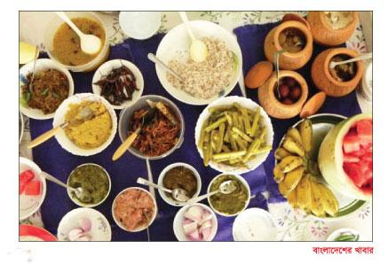

অধ্যায় ১৬
আমাদের সংস্কৃতি
১ ভাষা ও পোশাক
সংস্কৃতি হচ্ছে আমাদের প্রতিদিনের জীবনযাপনের ধরন: এর মধ্যে রয়েছে আমাদের ভাষা, পোশাক, খাদ্য, আচার-অনুষ্ঠান, গানবাজনাসহ আরও অনেক কিছু। আমাদের দেশে বিভিন্ন জাতিগোষ্ঠী ও ধর্মের মানুষের নিজস্ব সংস্কৃতি রয়েছে। এগুলো সব মিলিয়েই বাংলাদেশের সংস্কৃতি।
ভাষা
ভাষার মাধ্যমে আমরা মনের ভাব প্রকাশ করি। বাংলাদেশের বেশিরভাগ ক্ষুদ্র নৃ-গোষ্ঠীর নিজস্ব মাতৃভাষা রয়েছে। আমাদের রাষ্ট্রভাষা বাংলা। এদেশের হিন্দু, মুসলিম, খ্রিষ্টান, বৌদ্ধ সবাই বাংলা ভাষার মাধ্যমে একসূত্রে গাঁথা।
মেয়েদের পোশাক
শাড়ি বাংলাদেশের মেয়েদের ঐতিহ্যবাহী পোশাক। বর্তমানে অনেকেই বিশেষ করে কম বয়সী মেয়েরা সালোয়ার-কামিজ পরতে পছন্দ করে। ছোট মেয়েদের অনেকেই ফ্রক এবং স্কার্ট পরে। তবে এখনও বিশেষ অনুষ্ঠানগুলোতে বেশিরভাগ মেয়েই শাড়ি পরেন এবং নানারকম গয়না, টিপ, ফুল পরে থাকেন।
ছেলেদের পোশাক
এদেশের পুরুষেরা গ্রামাঞ্চলে এবং বাড়িতে সাধারণত লুঙ্গি পরেন। অফিসের কাজে তারা শার্ট-প্যান্ট পরেন। অনেকে বিশেষ অনুষ্ঠানে পাঞ্জাবি-পায়জামা পরেন। বয়স্ক হিন্দু পুরুষেরা আগে ধুতি পরতেন। পুরুষ মুসলমানগণ ধর্মীয় অনুষ্ঠানে পায়জামা-পাঞ্জাবি ও টুপি পরেন ।
৮১ক। এসো বলি
বিশেষ অনুষ্ঠানে তোমরা কী ধরনের পোশাক পর? জোড়ায় আলোচনা কর।
তোমাদের পরিবারের অন্য সদস্যরা কী ধরনের পোশাক পরেন?
খ। এসো লিখি
তোমার এলাকার মানুষজন কী ধরনের পোশাক পরেন সে সম্পর্কে লেখ।
|
মেয়েদের পোশাক |
ছেলেদের পোশাক |
|
- |
- |
|
- |
- |
গ। আরও কিছু করি
বিভিন্ন ধরনের পোশাকের ছবি দিয়ে একটি অ্যালবাম তৈরি কর। ছবির নিচে পোশাকগুলো সম্পর্কে লেখ।
ঘ। যাচাই করি
কোনটি সংস্কৃতির অংশ নয়?
ক. ভাষা
খ. পোশাক
গ. গাড়ি
ঘ. ধর্ম
৮২২ খাবার
কথায় আছে ‘মাছে-ভাতে বাঙালি’। মাছ ও ভাত আমাদের প্রধান খাবার। এছাড়াও আমরা ডাল, মাংস ও নানারকম শাকসবজি খাই এবং খাবার সুস্বাদু করার জন্য মশলা ব্যবহার করি।
বিশেষ অনুষ্ঠানে আমরা সাধারণত মাংস-পোলাও, বিরিয়ানি এবং খিচুড়ি খাই। বৃষ্টির দিনে খিচুড়ি খাওয়া বাঙালিদের সংস্কৃতিতে পরিণত হয়েছে। গরমের দিনে কৃষক পরিবারে নানারকম ভর্তা, ভাজি ও কাঁচামরিচ দিয়ে পান্তা খাওয়ার প্রচলন রয়েছে।
আমরা উৎসব অনুষ্ঠানে মিষ্টি খেতে ভালোবাসি। আমাদের মিষ্টি খাবারগুলো সাধারণত দুধের তৈরি । যেমন দই, পায়েস, রসগোল্লা, চমচম, ক্ষীর ইত্যাদি। ঈদের দিনে সেমাই এবং শবেবরাতে হালুয়া তৈরি হয়। বিভিন্ন পূজা ও উৎসবে হিন্দুরা পায়েস, নাড়ু, মোয়া এবং মুড়কি তৈরি করেন। বড়দিন উপলক্ষে খ্রিষ্টানরা অনেক রকম পিঠা তৈরি করেন।

ক। এসো বলি
তোমাদের প্রিয় খাবার নিয়ে জোড়ায় আলোচনা কর।
বিশেষ অনুষ্ঠানে তোমরা কী খাও?
তোমাদের প্রিয় মিষ্টি কী কী?
খ। এসো লিখি
নিচের ছকে দেওয়া উৎসবগুলোতে যেসব মিষ্টি জাতীয় খাবার খাওয়া হয় সেগুলোর নাম লেখ :
|
ঈদ ও শবেবরাত |
পূজা |
বড়দিন |
|
- |
- |
- |
গ। আরও কিছু করি
নিচে দেওয়া খাবারগুলোর যেকেোন একটির রেসিপি যোগাড় কর :
-
মাছের তরকারি
-
মাংসের তরকারি
-
সবজি
-
মিষ্টি
-
শরবত
ঘ। যাচাই
বাক্যটি সম্পূর্ণ কর:
আমাদের প্রধান খাবার কী কী ……………………………………………………………..
৮৪৩ আচার অনুষ্ঠান ও সংগীত
আমাদের জীবনে বিভিন্ন সময়ে অনেক রকম অনুষ্ঠান হয়। নিচে সেরকম তিনটি ছবি দেওয়া হলো :
আমাদের দেশে বিভিন্ন উৎসব অনুষ্ঠানে, পালা-পার্বণে এবং দৈনন্দিন জীবনে নানা প্রকার গান বাজনা হয়। লোকসংগীত বাংলাদেশের প্রাণ। ক্ষেতে লাঙল দিতে দিতে কৃষকেরা গান গায়। নৌকা বাইতে বাইতে মাঝি গান গায়। তেমনই এক গ্রাম থেকে অন্য গ্রামে যেতে যেতে বাউলেরা গান গায়। জারি, সারি, বাউল, ভাটিয়ালি, ভাওয়াইয়া, গম্ভীরা আমাদের প্রধান লোকসংগীত। এছাড়া গ্রামের মেলা আর অনুষ্ঠানগুলোতে যাত্রা, পালাগান, কীর্তন আর মুর্শিদি গানের আসর বসে। সংরক্ষণের অভাবে আমাদের নিজস্ব সংস্কৃতি হারিয়ে যাচ্ছে। বিদেশি সংস্কৃতির প্রভাবে আমাদের দেশের সংস্কৃতি আজ বিপন্ন। আমরা সবাই সচেতন হলে আমাদের সংস্কৃতি রক্ষা করা সম্ভব হবে।
৮৫ক। এসো বলি
পারিবারিক বিভিন্ন অনুষ্ঠান নিয়ে জোড়ায় আলোচনা কর।
তোমার সবচেয়ে পছন্দের অনুষ্ঠান কোনটি? কেন?
খ। এসো লিখি
আগের পৃষ্ঠার ছবিগুলো দেখ। যেকেোন একটি অনুষ্ঠান বেছে নাও এবং তোমার অভিজ্ঞতা বর্ণনা কর। অনুষ্ঠানটিতে কী ধরনের খাবার খেয়েছিলে? অনুষ্ঠানে কারা অংশগ্রহণ করেছিলেন?
|
মুখেভাত |
ছোট বাচ্চাদের প্রথম ভাত মুখে দেওয়ার অনুষ্ঠান |
|
জন্মদিন |
জন্মগ্রহণ করার দনিটি আনন্দ সহকারে পালন করা |
|
গায়ে হলুদ |
বিয়ের আগে গায়ে হলুদ অনুষ্ঠান হয় |
গ। আরও কিছু করি
তোমার এলাকার লোকগীতি সম্পর্কে আরও কিছু তথ্য খুঁজে বের কর।
ঘ। যাচাই করি
আমাদের সংস্কৃতি কেন তার ঐতিহ্য হারাতে বসেছে?
৮৬